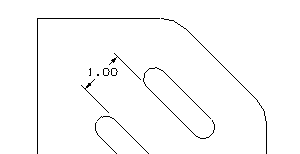

标注到控制点
您需要标注平板顶部两个插槽间的距离，一种方法是标注插槽特征边上两个端点间的平行距离。

-
放大俯视图。
-
在尺寸工具条上的制图尺寸下拉菜单中，选择平行尺寸 。
您想要精度为两位，平行尺寸对话框条显示当前全局精度首选项，它是在注释首选项对话框中设置的。
-
在值组中，将精度选项设置为2 。
这个设置将持续有效直到您关闭平行尺寸对话框条，当您下一次选择一种尺寸类型后，对话框条又将显示注释首选项对话框中的设置，对于这一次，精度为3位。
您只想要选择端点和中心点。
-
可选：在选择条上，打开端点
 ，并取消选择所有其它捕捉点选项。
，并取消选择所有其它捕捉点选项。 -
选择两个插槽的各自内部边端点，然后单击以放置尺寸。
